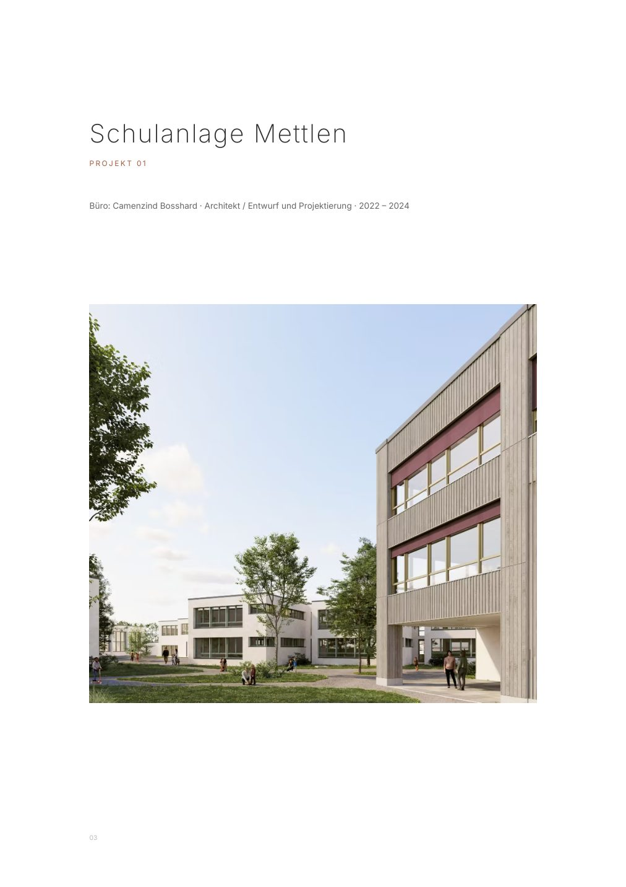
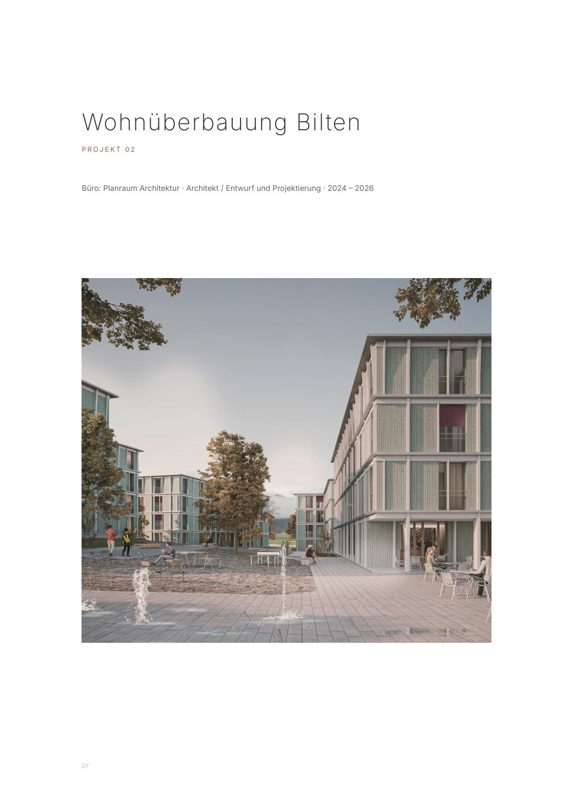
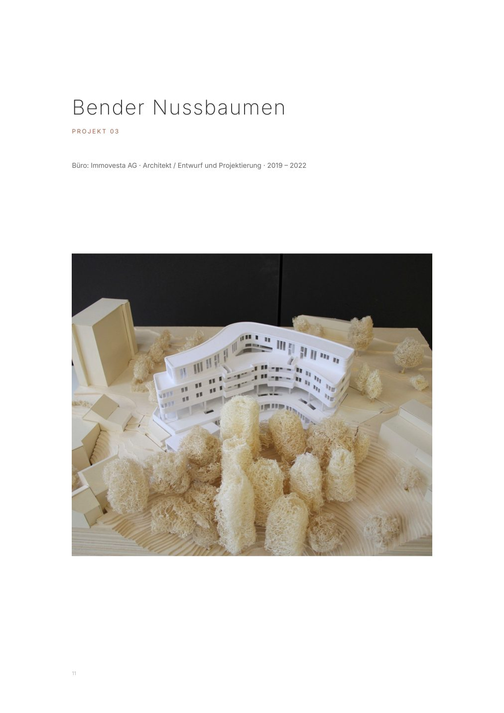
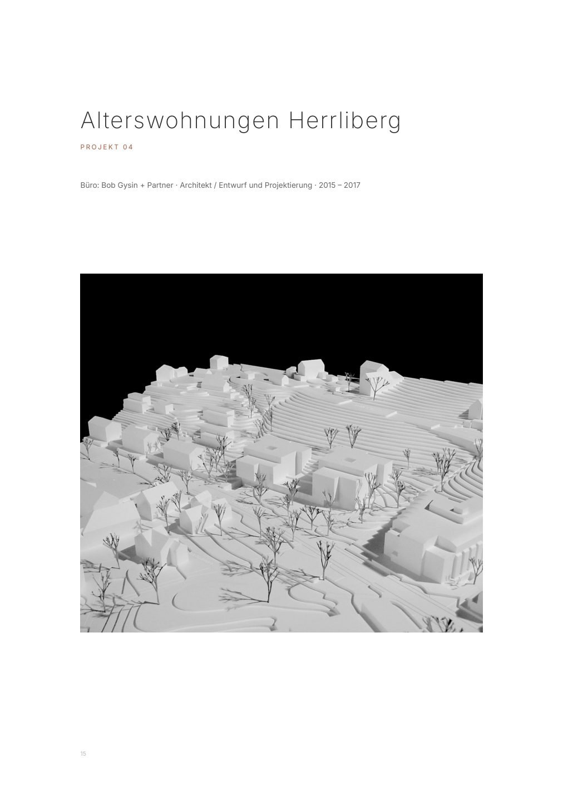
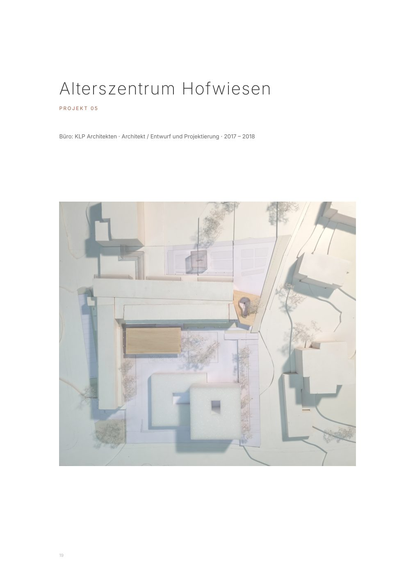
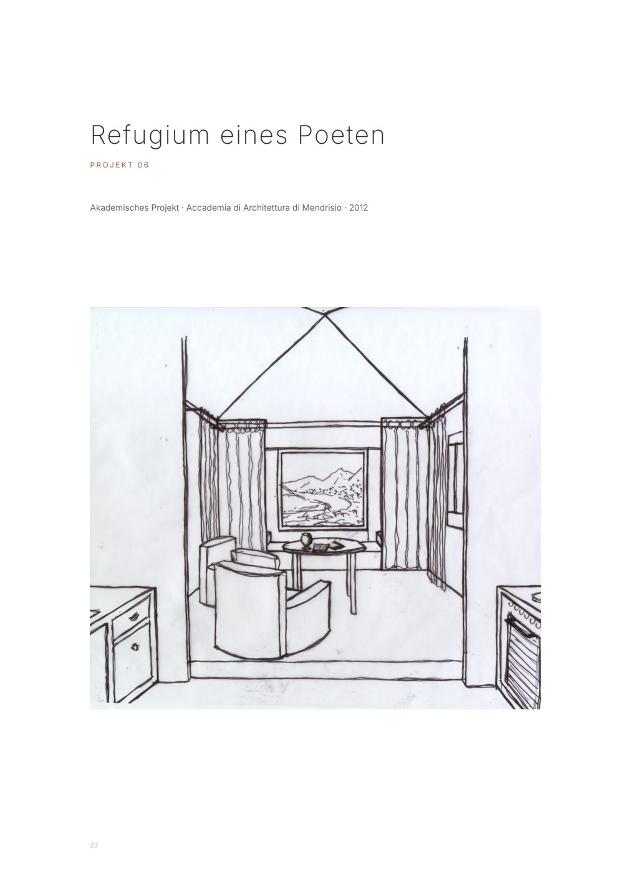

Schulanlage Mettlen
Camenzind Bosshard · Entwurf und Projektierung
Kompakte Ergänzung des Schulensembles. Kindergarten und Betreuung werden in einem klaren Baukörper mit fliessendem Innen- und Aussenbezug verbunden.
Architekt · Künstler · MSc USI AAM
Ausgewählte Arbeiten 2014–2026 mit Schwerpunkt Entwurf und Projektierung.

Profil
Geprägt durch die Schule von Mendrisio und die Zusammenarbeit mit Künstlern wie Not Vital verstehe ich Architektur nicht als blosse Erfüllung von Funktionen, sondern als Komposition aus Materie, Licht und Identität.
Mit über zehn Jahren Erfahrung im Entwurf bewege ich mich zwischen der Präzision der Schweizer Baukultur und der Freiheit der künstlerischen Geste.
Ausgewählte Arbeiten
Camenzind Bosshard · Entwurf und Projektierung
Kompakte Ergänzung des Schulensembles. Kindergarten und Betreuung werden in einem klaren Baukörper mit fliessendem Innen- und Aussenbezug verbunden.

Planraum Architektur · Entwurf und Projektierung
Präzise städtebauliche Setzung, grosszügige Aussenräume und eine gegliederte Holzfassade schaffen eine identitätsstiftende Wohnatmosphäre.

Immovesta AG · Entwurf und Projektierung
Aus Waldabstandslinien und Topographie modellierte Masse mit starkem räumlichem Ausdruck.

Bob Gysin + Partner · Entwurf und Projektierung
Ein ruhiger Rahmen für den Alltag, geschärft über Modularität, Materialität und Orientierung.

KLP Architekten · Entwurf und Projektierung
Ein Pavillon, der Licht als Baumaterial nutzt und die Grenze zwischen Innenraum und Garten auflöst.

Accademia di Architettura di Mendrisio
Geometrie und Stille als Antwort auf die monumentale Unordnung der Alpen.
Curriculum Vitae
Planraum Architektur AG · Camenzind Bosshard · Immovesta AG · KLP Architekten · Bob Gysin + Partner · Künstlerische Praxis
MSc und BSc Architektur, Accademia di Architettura di Mendrisio, USI.
Archicad, Adobe InDesign, Illustrator, Acrobat Pro, KI, Modellbau, Fotografie.
Deutsch, Romanisch, Italienisch, Englisch, Spanisch, Französisch, Portugiesisch passiv.
Kontakt
hitzbergerpatrick@hotmail.com
+41 79 643 41 91
Zürich, Schweiz